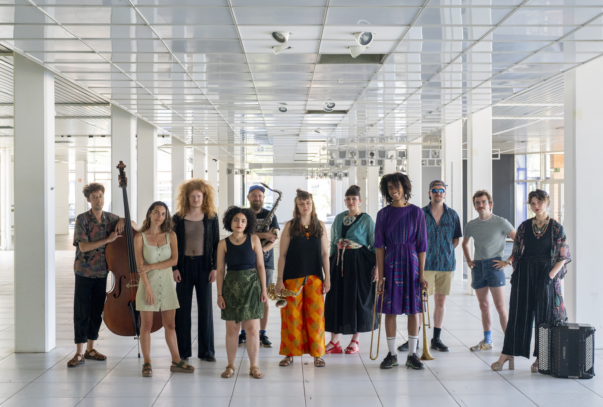

The Democratic Orchestra

Composition for ensemble of improvisers · 40’
The Democratic Orchestra is a large-scale composition by Mario Calzada, written for and premiered by the European Music Collective at Banka Studio (Intro in Situ, Maastricht, The Netherlands) in June 2025. The work explores improvisation as a living metaphor for democratic processes: freedom, dialogue, negotiation, and collective responsibility.
Video
Audio excerpts
Excerpt I - Strange Rain 11:15
Excerpt II - Sunbird 17:00
Concept
The Democratic Orchestra is a composition for an ensemble of improvisers whose music is based on dialogue and freedom. The project asks how improvisation can function as both a metaphor and a practice of democratic life: individual agency framed by collective responsibility.
By using improvisation as its core tool, the work invites musicians to listen, respond, negotiate, and compromise — mirroring the dynamics of liberal democratic societies. The piece functions both as an artistic laboratory and as a reflection on contemporary political and social questions.
Downloads
Credits
European Music Collective
Live premiere: Banka Studio, Maastricht (NL), June 2025
Recording: Banka Studio · Mix & Master: Mama Studio
Organization: Christoph Götzen